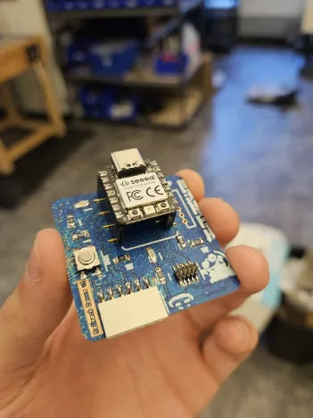
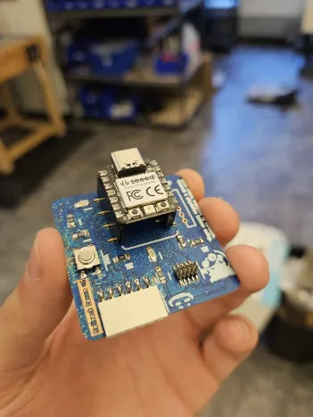

So, while the assignment only required us to use the Carvera to mill the top layer of copper off of the PCB in order to carve in the traces
(what makes the electrical connections between components), however I wanted to go above and beyond. The Carvera, unlike most other consumer CNC machines,
is equipped to also apply solder mask and silk screen to PCBs (solder mask being the colored coating, usually green, that covers the PCB, silkscreen being the white text
and symbold printed on it) to make more professional boards (I think you can begin to see the beginning of my pain.) 'Oh, no problem', I thought. 'This is a modern and expensive machine
so this should be easy enough'.
Yeah okay so that was bullshit.
My first attempt had many, many problems. To begin with, the process took around 6 hours in total and the problems are as follows:
1: The white solder mask material is to be used for silk screening only. I thought it would look cool to make a white circuit board, but it has some kind of different formulation because it went on
way too thick and way to bumpy.
2: Somehow, all of my 'cutting layers' (AKA the different files for each step like milling the copper, lasering the silk screen, etc.) were misaligned resulting in the silk screen being completely off from the traces,
the pad holes being off from those two things, and the drill holes being off from everything so this PCB was essentially just not usable.
3: The laser was completely defocused resulting in soft and non-precise silk screening (the laser is used to UV cure the silkscreen)
4: While doing the final cut to cut out the shape of the board, it came loose resulting in a jagged miscut edge. This is because I taped down the material, just not under the part that was being cut so it just
flew off.
5: The manufacturer reccomendations for everything were totally wrong. For example, they said to mill the copped at a depth of 0.05 mm. This made a horrible result, but it was good once I used
a 0.055 mm depth instead. Also, when the machine goes back and mills the pads to expose certain copper after applying the masking material, it was reccomended to use a cut depth of 0.2 mm. I found that it only worked at all
with a depth of 0.25 or 0.3 mm.
These were on top of the scuffed-ass software being extremely difficult to use (when it worked right). Also I forgot to mention the machine also randomly cut way waay too deep (like 3 mm instead of 0.2) for exactly 2 of the pads
just for funsies and to make me cry :)
Below you can see the images associated with failure #1.
Week 4: PCB Milling and Soldering
Go Back
(The following message is from Matthew after the completion of the assignment)
Holy Fuck.
So to begin, I'll explain what this week's assignment was. We were to use the 'Carvera' machine to mill a PCB (which was already designed).
Then, we were to solder the corresponding peices to the PCB to make a working peice. Easy, right? Well that's what I thought too. Get ready to read
the story of how this took me around 15 out of class work hours.
TLDR: I tried to be fancy and it cost me my sanity.
Attempt 1
Attempt 2 (and 2.5?)
The next morning, I began my work at around 8:30 AM, before the lab even opened. After struggling to unlock it with my keycard, I got to work. Milling the copper and applying the mask material went well, mostly because of what yesterday's failure taught me, but then came silkscreening. So to clarify, I researched how to refocus the laser, which was actually pretty easy, but then things went very wrong. Despite setting the laser to the MANUFACTURER RECCOMENDED 20% power, the laser straight up burned through the mask material. Like it turned into ash. Not to mention the silk screen was even more misaligned than previously. So, (and this is where the 2.5 comes in), I applied another layer of mask on top of everything and cured it and then tried the silk screen again at 15% power. Well, the laser was still burning straight through so after 3 more attempts, I found that the ideal laser power was 7%. 7! And the people who made the damn thing said 20! ????????? Anyway, everything was misaligned and looked like shit so I abandoned this board, which you can see below. This failure took me to about 12:30 giving me about an hour to get another try in before class.
Attempt 3
This had to be it. I had painstakingly corrected each of the BS manufacturer specs and failed in every conceivable way. But this was my time to get it right. And I did... kinda.
Though pretty much everything went perfectly, it was discovered that the silkscreen and (usually) only the silkscreen just isnt aligned with everything else. This was also demonstrated in my classmate Leah's
board (they were the only other one crazy enough to do the masking and silk screening). Again, just for funsies. There's no way to fix this.
Now, it was finally time to solder. The process for soldering was different than I was used to due to the fact that the components I was working with were fractions of a millimeter in size. Essentially,
I was to put some solder paste (a goo filled with tiny metal balls) on the contact pads, then use tweezers to gently place the components on top of the solder goo. Finally, I put the whole PCB (once all the parts
were goo'ed on) into a big industrial oven which precisely melted the solder goo into liquid metal which would solder the parts to the board. Though very difficult, this process worked very well. The last step was
to manually solder the microcontroller to some IO pins to mount on the board. Finally, I was free.
 
